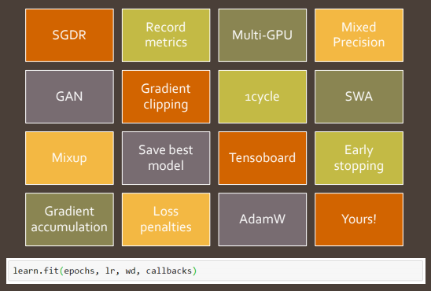
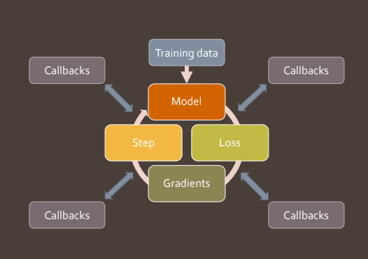

Fastai Callbacks as Lisp Advice
Creating state of the art deep learning algorithms often requires changing the details of the training process. Whether it’s scheduling hyperparameters, running on multiple GPUs or plotting the metrics it requires changing something in the training loop. However constantly modifying the core training loop every time you want to add a feature, and adding a switch to enable it, quickly becomes unmaintainable. The solution fast.ai developed is to add points where custom code can be called that modifies the state of training, which they call callbacks.
However there’s a similar concept from the early 90’s in Emacs Lisp called advising functions, and in the Common Lisp Object System as method combination. Emacs Lisp is very dynamic and is designed so that users can easily modify the functionality of core components without needing to directly edit that code. Advising a function lets you execute some code before or after the function is invoked letting you change its behaviour with side effects.
Learning from how Lisp allows changes in functions can help design a better system for modifying machine learning training loops.
fastai callbacks
Fastai callbacks allow for adding a wide variety of functionality; like recording metrics, clipping gradients or saving the best model.

This is done by having places in the training loop code that can “call back” to external code.

In the training loop below from fastai v2 the callbacks corresponds to the calls to self; e.g. self('begin_batch').
def fit_epoch(self):
self.iters = len(self.dl)
try:
for i,(xb,yb) in enumerate(self.dl):
try:
self.iter, self.xb, self.yb = i, xb, yb; self('begin_batch')
self.pred = self.model(self.xb); self('after_pred')
self.loss = self.loss_func(self.pred, self.yb); self('after_loss')
if not self.in_train: continue
self.loss.backward(); self('after_backward')
self.opt.step(); self('after_step')
self.opt.zero_grad()
except CancelBatchException: self('after_cancel_batch')
finally: self('after_batch')
except CancelEpochException: self('after_cancel_epoch')For example to add a Callback that stops an epoch after 5 batches is straightforward.
class StopAfterNBatches():
def __init__(self, max_batches=5): self.max_batches = max_batches
def begin_batch(self):
if self.iter > self.max_batches:
raise CancelEpochExceptionNotice that a Callback can access (and modify) the state of variables in the training loop, like iter. One drawback of this is if you’re not careful then different Callbacks may interfere and not be usable together.
Callbacks can be added or removed by name:
def add_cbs(self, cbs):
for cb in list(cbs): self.add_cb(cb)
def add_cb(self, cb):
setattr(self, cb.name, cb)
self.cbs.append(cb)
def remove_cbs(self, cbs):
for cb in list(cbs): self.cbs.remove(cb)The mechanism that is used to invoke the callbacks is fairly straightforward:
def __call__(self, cb_name):
res = False
assert cb_name in self.ALL_CBS
for cb in sorted(self.cbs, key=lambda x: x._order): res = cb(cb_name, self) and res
return resFor a deeper understanding take a look at Sylvain’s Talk on Callbacks, or the fast.ai Deep Learning course (version 3 part 2).
Advice and Method Combinators
Common Lisp Object System and Emacs Advice lets you change the behaviour of a function by triggering custom code to be executed whenever the function is invoked. One frequent usecase is to add tracing or profiling around certain functions. There are examples of method combinators in Common Lisp, but here’s an example in Python.
class Foo(Advisable):
def bar(self, x): return x
foo = Foo()
def print_name(self, x): print(f'{self.name}: {x}')
print(foo.bar(2))
# Output:
# 2
foo.advise_before(foo.bar, print_name)
print(foo.bar(2))
# Output:
# Baz: 2
# 2
foo.remove_advice(foo.bar, print_name)
print(foo.bar(2))
# Output:
# 2Notice this is similar to callbacks, and we can add and remove them, but we can define them on any function. This is implemented with a bit of metamethod magic in Python:
from collections import defaultdict, OrderedDict
def apply_before(function, before_functions, extra_args=[]):
def out_function(*args, **kwargs):
for f in before_functions: f(*extra_args, *args, **kwargs)
return function(*args, **kwargs)
out_function.__name__ = function.__name__
return out_function
class Advisable(object):
def __init__(self): self.advice_before = defaultdict(OrderedDict)
def advise_before(self, name, advice):
if callable(name): name = name.__name__
if not callable(object.__getattribute__(self, name)):
raise ValueError('{} not a callable method'.format(name))
advice_name = advice.__name__
if advice_name is None: raise ValueError('The advice must have a name')
self.advice_before[name][advice_name] = advice
def remove_advice(self, name, advice):
if callable(name): name = name.__name__
if callable(advice): advice = advice.__name__
del self.advice_before[name][advice]
def __getattribute__(self, name):
value = object.__getattribute__(self, name)
if callable(value) and name not in ('__init__', 'advise_before'):
value = apply_before(value,
self.advice_before[name].values(),
[self])
return value
From advice to callbacks
We could use this kind of method to refactor the fastai Callback by breaking it into separate functions:
...
def fit_epoch(self, data):
try:
for xb, yb in data: self.fit_batch(xb, yb)
except CancelEpochException: self.cancel_epoch()
def fit_batch(self, xb, yb):
try:
pred = self.predict_batch(xb)
loss = self.loss_batch(pred, yb)
self.backward(loss)
self.optimise()
except CancelBatchException: self.cancel_batch()
def predict_batch(self, xb): return self.model(xb)
def loss_batch(self, pred, target): return self.loss(pred, target)
def backward(self, loss): loss.backward()
def optimise(self):
self.opt.step()
self.opt.zero_grad()
def cancel_epoch(self): pass
def cancel_batch(self): pass
...We could then add a callback as before:
class StopAfterNBatches():
def __init__(self, max_batches=5):
self.max_batches = max_batches
def __call__(self, model, xb):
if hasattr(model, 'iter'):
model.iter += 1
else:
model.iter = 0
if model.iter > self.max_batches: raise CancelEpochExceptionHowever note that because we have to have a separate advice for each method, instead of fastai Callbacks, we would have to define many more classes for a general callback and communicate between phases by storing data on the model. This is a lot harder to maintain, and in this sense fastai callbacks are superior. It’s also going to be hard for someone reading the code to understand how it works (as they’ll need to dig into the __getattribute__ code). This barrier to entry is only worthwhile if this is something that’s going to be used all over a large codebase; otherwise it makes a small piece of code much harder to understand. However knowing that advice and callbacks are related means we can translate the idea of advice combinators to callbacks.
Different ways of advising functions
In the example above we focused on advising before the function was called, so we get behaviour:
# Before
advice(*args)
function(*args)However there are a number of different advice combinators for combining functions.
For example there’s before-while pattern which was used in fastai v1
# After While
if advice(*args):
function(*args)But the most interesting examples compose with the function being called.
# Filter Args
advice(*function(*args))
# Filter Return
function(*advice(*args))
# Around
advice(function, *args)A purer callback system
The fastai callback system involves communicating everything using state. This is flexible, and performant because we’re not copying large tensors around. However it increases the risk that different callbacks will interfere by modifying the same variable. (This is always a risk because that’s sometimes what they need to do to function properly!) It also increases the cognitive overhead of the programmer because they need to know about the entire internal state of the training process to use it.
A better approach could be to pass the data as arguments; so instead of
self.iter, self.xb, self.yb = i, xb, yb; self('begin_batch')
self.pred = self.model(self.xb); self('after_pred')
self.loss = self.loss_func(self.pred, self.yb); self('after_loss')
self.loss.backward(); self('after_backward')
self.opt.step(); self('after_step')we could use something like:
self('begin_batch')
pred = self.model(xb)
pred = self('after_pred', xb, pred) or pred
loss = loss_func(pred, yb)
loss = self('after_loss', loss, pred, yb) or loss
loss.backward()
self('after_backward', self.model) # Look at model weights
self.opt.step()
self('after_step, self.model, self.opt)
self.opt.zero_grad()This is still a work in progress, and I’ll need to experiment with it to see whether it’s any better in production.
Full source:
from collections import defaultdict, OrderedDict
def apply_before(function, before_functions, extra_args=[]):
def out_function(*args, **kwargs):
for f in before_functions: f(*extra_args, *args, **kwargs)
return function(*args, **kwargs)
out_function.__name__ = function.__name__
return out_function
class Advisable(object):
def __init__(self): self.advice_before = defaultdict(OrderedDict)
def advise_before(self, name, advice):
if callable(name): name = name.__name__
if not callable(object.__getattribute__(self, name)):
raise ValueError('{} not a callable method'.format(name))
advice_name = advice.__name__
if advice_name is None: raise ValueError('The advice must have a name')
self.advice_before[name][advice_name] = advice
def remove_advice(self, name, advice):
if callable(name): name = name.__name__
if callable(advice): advice = advice.__name__
del self.advice_before[name][advice]
def __getattribute__(self, name):
value = object.__getattribute__(self, name)
if callable(value) and name not in ('__init__', 'advise_before'):
value = apply_before(value,
self.advice_before[name].values(),
[self])
return value
class Foo(Advisable):
name = 'Baz'
def bar(self, x): return x
foo = Foo()
def print_name(self, x): print(f'{self.name}: {x}')
print(foo.bar(2))
# 2
foo.advise_before(foo.bar, print_name)
print(foo.bar(2))
# 4
# 2
foo.remove_advice(foo.bar, print_square)
print(b.f(2))
# 2